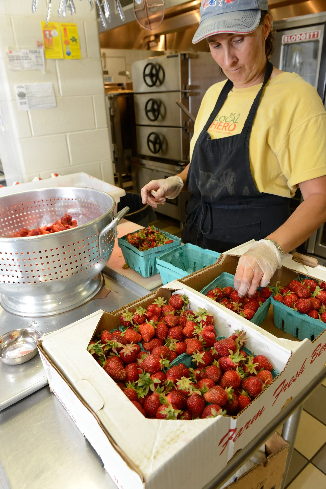
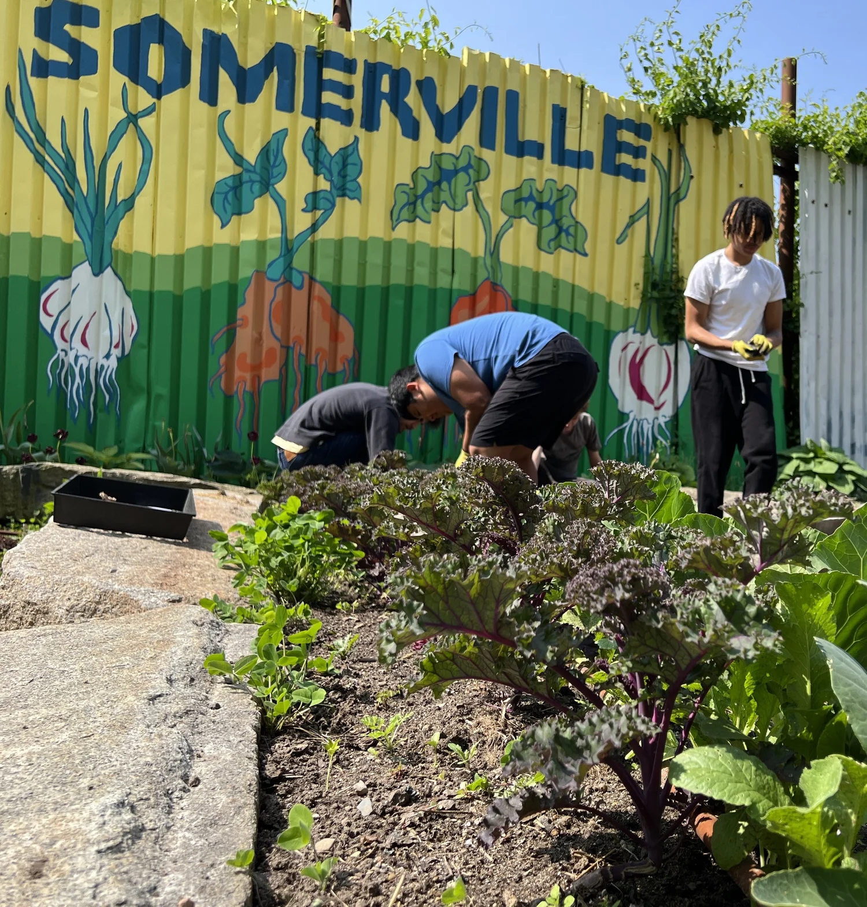
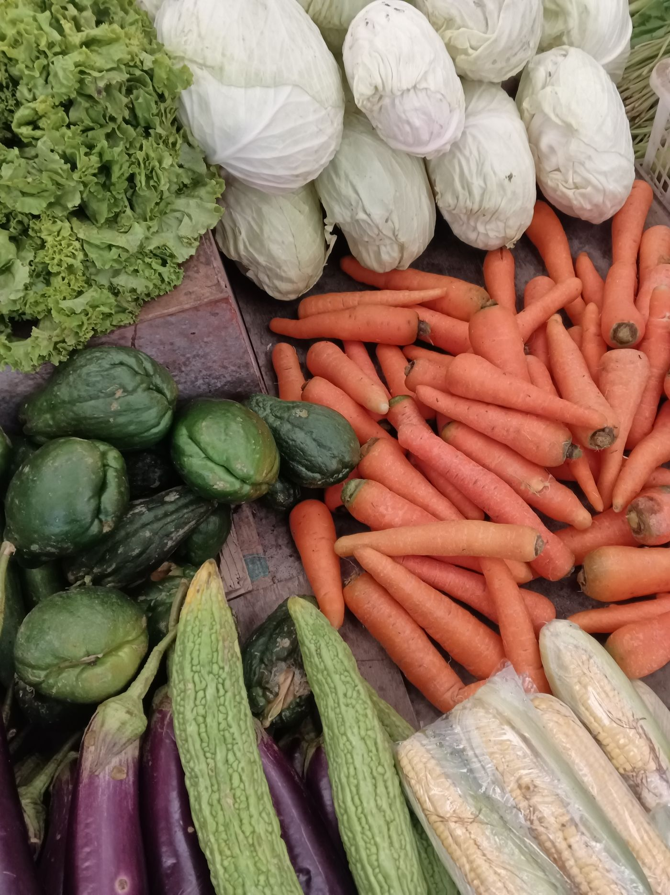

GRANT INFORMATION
Farming Reinforces Education and Student Health — a state grant program helping Massachusetts schools serve more local food and teach students where it comes from.
ABOUT THE PROGRAM
The Massachusetts FRESH (Farming Reinforces Education and Student Health) Grant is a statewide farm to school and farm to early care grant program established with $1 million in COVID relief funds. The program is administered by the Mass. Department of Elementary and Secondary Education (DESE).
The FRESH Grant program is designed to support K-12 and early education and care centers to start up or expand their local foods purchasing and education efforts through infrastructure investments, staff training, and educational initiatives that lead to program success and sustainability. Providing schools with the resources they need to deepen their farm to school programming is a win for our kids, our farmers, and our communities.

Want to learn more about current or past grantees? Interested in applying?
Learn more →
THE BILL
The Farm to School bill (S.311 / H.565) was reported favorably out of the Joint Committee on Education and currently awaits approval by the Joint Committee on Ways & Means.
With over $8M in funding requested during the first four application rounds, additional funds are needed to fully support schools across the Commonwealth.
Tell your Massachusetts legislators to make the Farm to School programs permanent and support the passage of S.311 / H.565.
HOW WE GOT HERE
The MA Food for MA Kids Coalition saw many successes in moving the Farm to School bill forward since its first introduction in 2021. In 2022 we were able to secure funding to implement a pilot grant program, but this one-time appropriation does not establish a permanent Farm to School Grant Program here in Massachusetts.
State Representative Pignatelli and Senator Lesser filed H.686 and S.349, respectively, in March 2021 to establish a farm to school grant program within the Department of Elementary and Secondary Education.
Massachusetts Farm to School (MFTS) hosted a well attended policy briefing on October 19th, 2021 with a diverse panel of supporters for the bill.
In December 2021, Senator Lesser, along with the support of the Legislature, was successful in getting $1,000,000 in funding included in the COVID appropriations bill to fund the first year of this program with American Rescue Plan Act (ARPA) funds.
On January 4th, 2022, the Massachusetts Joint Education Committee held a public hearing for the bill where 12 individuals testified in favor of the bill — including educators, students, school nutrition staff and community members.
The bill did not pass out of the Joint Education Committee before the February 2nd deadline.
State Representative Pignatelli and Senator Comerford filed H.558 and S.243 to establish a permanent Farm to School grant program within DESE.
In the spring of 2023, 16 K-12 schools and early education programs received nearly $500,000 in the inaugural round of FRESH grants.
In February 2024, H.558 and S.243 were referred favorably out of the Education Committee to the Ways & Means Committee for consideration.
In Spring of 2024, DESE awarded the second round of FRESH Grant awards totalling $400,000 to 23 school districts and childcare centers across the Commonwealth to support local food and local food education in schools.
Together DESE received over $4M in funding requests between the two application rounds of 2023 & 2024.
Current session: Representatives Duffy and Vargas and Senator Comerford filed S.311 / H.565; the Joint Committee on Education voted unanimously to advance the bill, now in Ways & Means.
